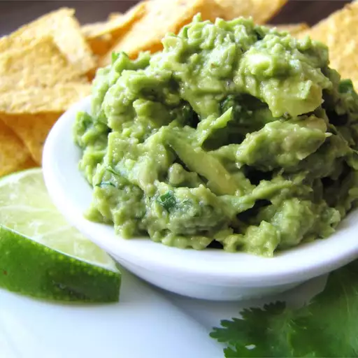

Return
Simply Guacamole

Guacamole is always a hit at a party! This is a very simple recipe that
always turns out amazing!
- 5 avocados - peeled, pitted and mashed
- 2 tablespoons fresh lemon juice
- 3/4 cup minced green onion
- 1/2 cup minced fresh cilantro
- salt and pepper to taste
- Stir together the avocado and lemon juice in a serving bowl
- Add the green onion and cilantro; mix well
- Season with salt and pepper to taste
- Serve immediatly or store covered in refrigerator with avocado
pits in the bowl to keep from browning